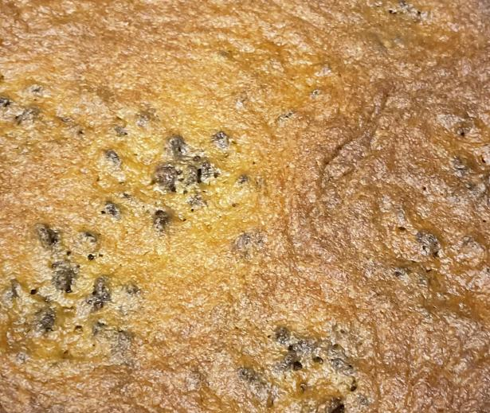

Cookie Recipe

Description
A decadent cookie recipe for melt in your mouth golden cookies. Easy to prep and bake, full prep and cook time is only around 25 minutes!
Ingredients
- 2 1/4 cup flour
- 1 1/4 tsp baking soda
- 1 tsp salt
- 1/3 tsp garlic powder
- 1 cup butter
- 3/4 cup sugar
- 1 cup brown sugar
- 1 1/4 tsp vanilla extract
- 2 egg
- 2 cup chocolote morsel
Steps
- Preheat oven to 375 degrees F.
- Combine flour, baking soda, and salt in a small bowl.
- Beat butter, sugar, brown sugar, and vanilla extract in a large bowl until creamy.
- Add eggs, one at a time, to the large bowl beating well while adding until smooth.
- Slowly beat flour mixture into large bowl until creamy once more.
- Add and stir in morsels.
- Bake for 8-12 minutes or until desired color and texture.
- Allow cooling for 3-5 minutes, and enjoy.